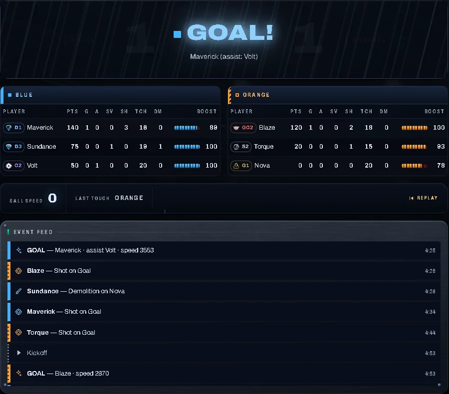
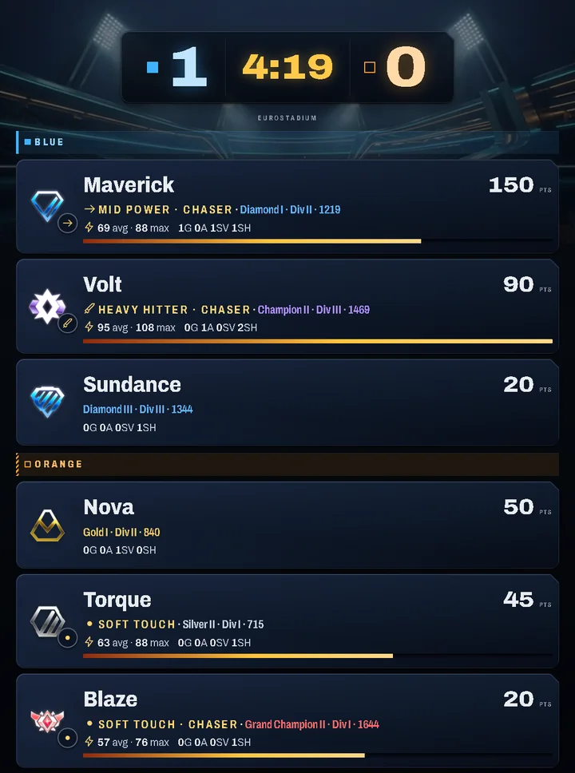
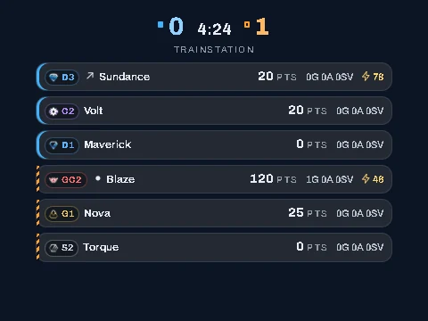

A free coach for Rocket League on PC. It reads the game's official Stats API on your machine while you play, measures your habits against your own baseline, and coaches you one focus at a time.
On your phone? RL Live Tracker runs on a Windows PC. Send yourself the link and grab it there.
Windows SmartScreen will warn you, because this is an unsigned indie build. Click "More info", then "Run anyway". The installer puts RL Tracker in your Start menu; its README walks you through everything else.
You can read the source before you download: rl-tracker-source on GitHub mirrors the shipped build, byte for byte.
Screenshots from the app's demo mode. The match is simulated and the players are made up.



Around 30 behavioral metrics per match: kickoff first touches, touch power, boost discipline, movement. All computed from the telemetry the game itself broadcasts.
Your baseline is your own play. Never pro benchmarks.
The written advice comes from a bank of quotes from published Rocket League coaching guides. Over 30 sources, cited in the app, so you can see whose advice you are getting and look it up yourself.
One setting in TAStatsAPI.ini (DefaultStatsAPI.ini if you don't have that file), and Rocket League broadcasts match JSON on a local port on your PC. Nothing touches the game's process or memory.
Psyonix documents this channel for exactly this purpose.